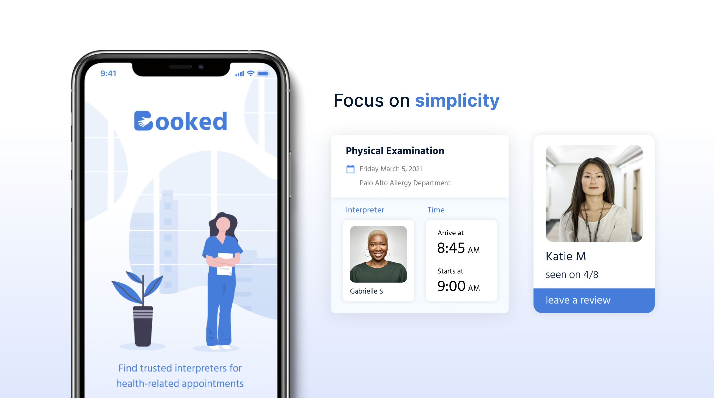
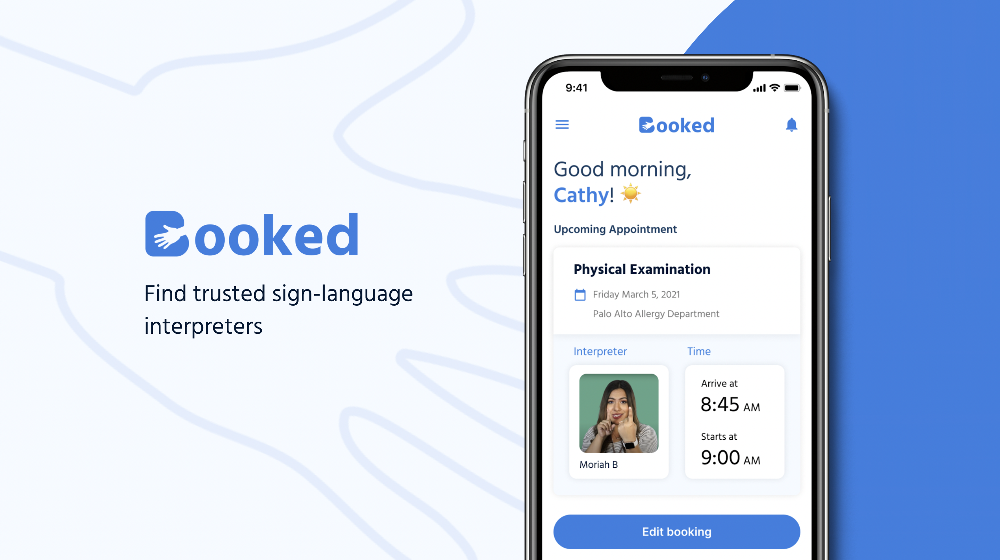

Booked App Design
Role
User Researcher
Product Designer
Tools
Design Thinking
Figma, Miro
Timeline
Winter 2021
10 weeks
Team
2 designers,
2 developers
A new booking system
Connecting Deaf patients to Sign Language interpreters
Requesting healthcare accommodations and ensuring that special needs are met – as required by law – is a frustrating process for Deaf patients. Booked is an app that offers a seamless system that leverages peer-endorsed recommendations and personal preferences to find and book interpreters.
My role: high-fidelity design
While I was involved in all aspects of the design process, I focused on turning insights from user testing and heuristic evaluation into concrete design changes for our high-fidelity design, which was developed into an iOS mobile app.
Task flow overview
Task 1: Creating an account
Users can create a profile by providing key information that will help customize their experience. We assumed Booked would be compatible with existing booking systems. Once users log in, they can view their upcoming appointments and start exploring interpreters.

Task 2: Browsing interpreters
Users can browse and filter interpreters that match their preferences such as years of experiences, star rating, or gender. They can also view interpreter bios, which include videos of interpreters signing so that users can gauge how their signing style may be compatible with their own.

Task 3: Booking an interpreter
Users can book interpreters and view crucial appointment details, such as the specific location within the hospital and a meeting time before the hospital call time. This arose from a suggestion from that Child of Deaf adults we talked to, who said informal introductory conversations happen right before appointments as patients meet their interpreter for the first time– this makes that interaction more intentional.

Task 4: Leaving a review
Users can leave reviews, which originally only included non-text input in order to prevent oversharing medical information. We only added text input once hospital staff shared that it would be crucial to respond to patient needs. This task also includes the social aspect of getting to view reviews near a patient and from friends that they add, as well as their own public profile.

Learnings
 The biggest takeaway I had was how inaccessible systems in general currently are. Beyond medical processes, we further observed inaccessible design systems while conducting user research.
It was really challenging to find Deaf users given our team’s limited network, and even when we found someone to interview, we had to make sure a sign language interpreter was also available and scheduled for that call, which was a new experience for our team and difficult given rapid iteration timelines.
This extended to the actual interviews– while user testing, traditional methods of having users “think out loud” was less efficient because users had to pause their interaction with our prototypes to sign their comments and have it interpreted for us.
Additionally, alt text is not possible on Figma, so we didn’t have a way to test with users who had more than one disability.
This entire project has shown me that we must further improve designs and processes outside of medical settings in order to create accessible products and experiences for everyone.